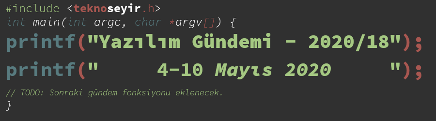
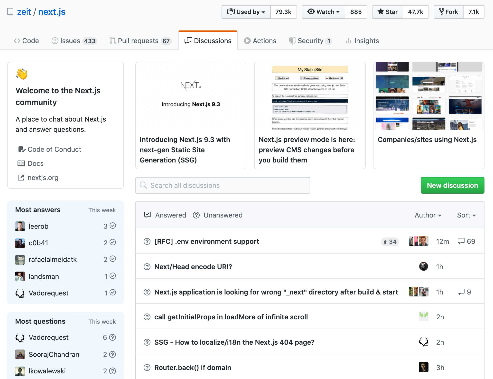
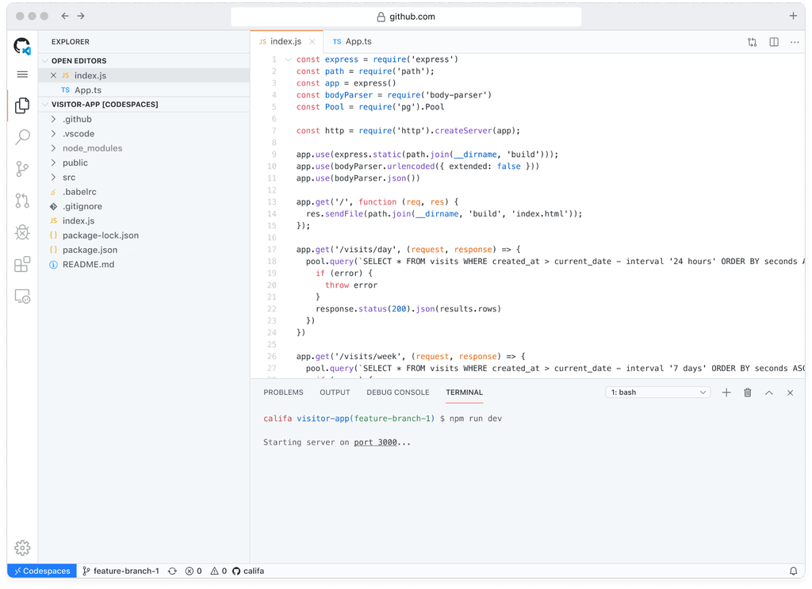
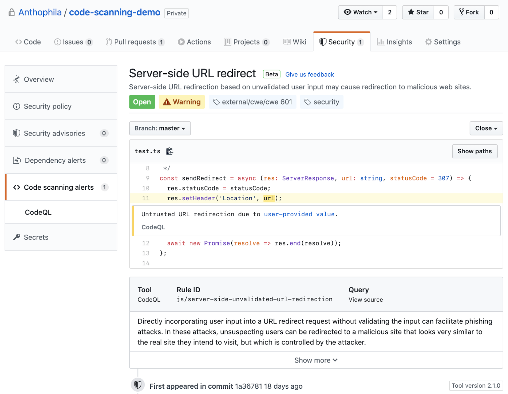
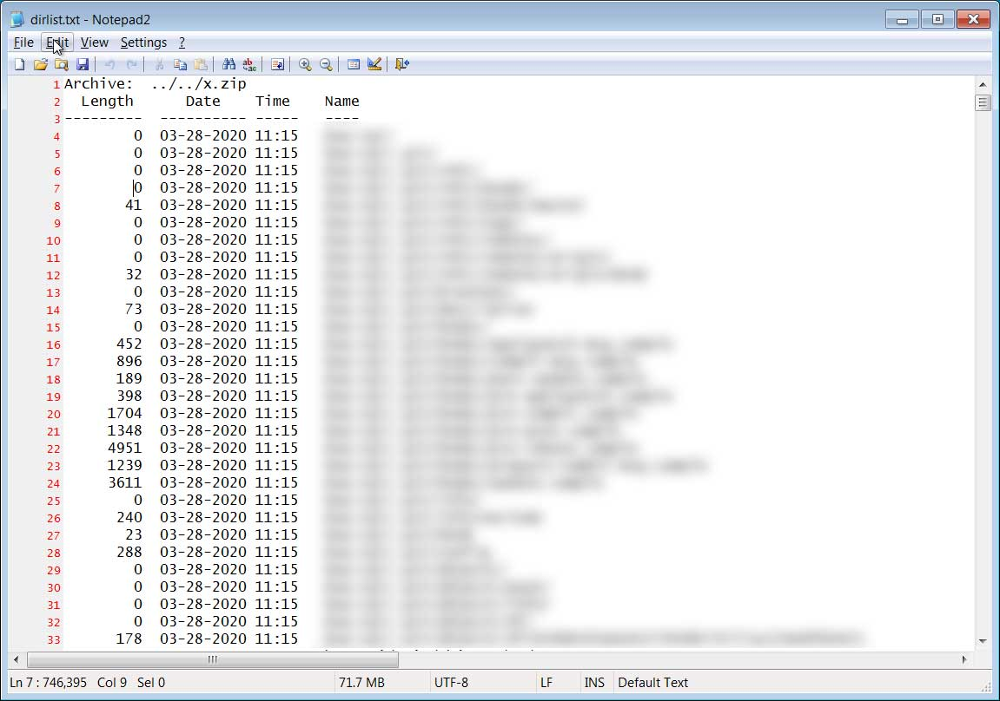
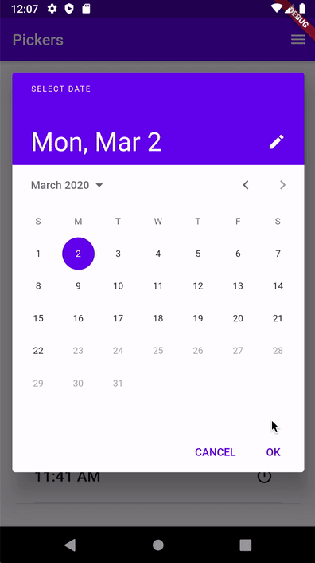
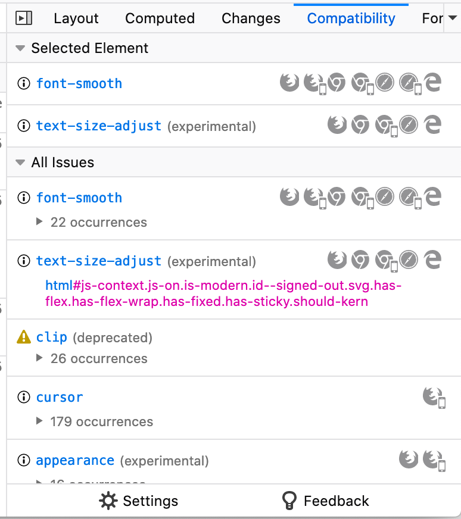
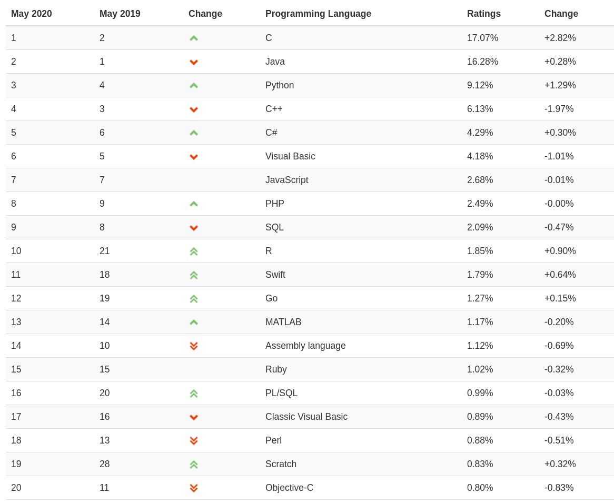
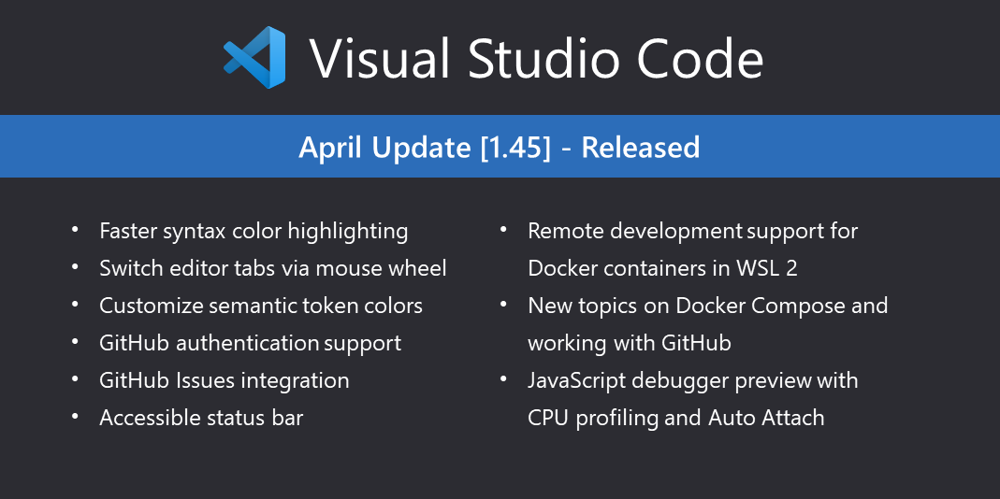

Yazılım Gündemi - 2020/18
4-10 Mayıs 2020
İçindekiler
- 1. GitHub, Satellite 2020 etkinliğini gerçekleştirdi
- 2. Microsoft'un GitHub hesabı hacklendi
- 3. Facebook SDK kütüphanesindeki bir hata, popüler iOS uygulamalarının çökmesine yol açtı
- 4. Flutter 1.17 ve Dart 2.8 sürümleri yayınlandı
- 5. Firefox 76 ile gelen yeni özellikler
- 6. TIOBE popüler programlama dilleri sıralamasını Mayıs 2020 için güncelledi
- 7. Visual Studio Code Nisan 2020 (v1.45) sürümü yayınlandı
- 8. Yaklaşan Online Etkinlikler #EvdeKal
- 9. Diğer Haberler
- 10. Lisans

< Önceki Gündem | 4-10 Mayıs 2020 | Sonraki Gündem >
1 GitHub, Satellite 2020 etkinliğini gerçekleştirdi
Geçtiğimiz yıllarda Microsoft tarafından satın alınan GitHub, geçtiğimiz hafta içerisinde Satellite 2020 etkinliğini sanal olarak gerçekleştirdi. Etkinlikte duyurulan yeniliklere birlikte göz atalım.
1.1 GitHub Discussions

Şekil 2: Örnek bir discussions sayfası için burayı ziyaret edebilirsiniz: https://github.com/zeit/next.js/discussions
Yazılım geliştiriciler olarak sıklıkla takıldığımız konularda yardım alma ihtiyacımız oluyor. Uzun bir zamandır bu ihtiyacımızı StackOverflow üzerinde gideriyorduk. Zaman zaman alternatifleri çıksa da StackOverflow kadar tutmadı fakat artık yalnız değil. GitHub, Discussions özelliği ile doğrudan StackOverflow'u hedef alıyor bence. Herkese açık depolar için yakında beta olarak açılacak bu özellikle artık GitHub üzerinde proje sayfalarında da ilgili projeyle ilgili sorular sorup, çözümü yazan kişilerin mesajlarını çözüldü olarak işaretleyebileceğiz. Önceden beri issue sistemi zaten vardı fakat bu discussions ile artık StackOverflow'daki gibi sorular sorabileceğiz. GitHub ve StackOverflow arasında ortaya çıkan bu rekabet nereye varacak.
1.2 GitHub Codespaces

Yazılım gündemi yazılarını takip edenler bu ismi mutlaka hatırlayacaklardır. Evet, bir önceki gündem yazısından hatırlıyorsunuz. Microsoft, "Visual Studio Online" olan cloud tabanlı geliştirme çözümünün ismini "Visual Studio Codespaces" olarak değiştirmişti (bkz: Yazılım Gündemi - 2020/17). Ne tesadüftür ki bir başka Microsoft firması da aynı isimde özellik tanıtıyor :). Çoğunuzun da anladığı üzere artık GitHub üzerinden tek bir tıklama ile cloud tabanlı geliştirme ortamımızı ayağa kaldırabileceğiz. Henüz limitli açık beta sürecinde ücretsiz olarak kullanılabilen bu özellik herkese açıldığında kendine özel bir ücretlendirme ile gelecekmiş. Muhtemelen geçen hafta duyurduğum "Visual Studio Codespaces"deki fiyatlarla aynı olacaktır. GitHub'daki normal basit dosya düzenleme özelliği ücretsiz kalmaya devam edecek tabii ki. Limitli açık beta için başvuru yapmıştım fakat henüz onay gelmediği için detaylı bir şeyler yazamıyorum. Sizler de konu alt başlığına tıklayarak özelliğin sunum sayfasına erişebilir, açık beta için başvuru yapabilirsiniz. Onay alıp, deneme imkanınız olursa deneyimlerinizi yorumlar bölümünde paylaşmaktan kendinizi geri koymayın.
1.3 GitHub Codescanning ve Secret Scanning
Geçtiğimiz senenin yazılım gündemi yazılarının birinde (bkz: Yazılım Gündemi - 10) GitHub'ın Semmle isimli kod analizi çözümü sunan bir şirketi satın aldığını haber yapmıştım ve "GitHub bunu mutlaka kullanır bir şekilde" demiştim. İşte o kullanımlar geçtiğimiz hafta duyuruldu. Artık GitHub'a yüklediğimiz kodlar üzerinde güvenlik açıkları ve zafiyetler için otomatikleştirilmiş süreçler içeren 2 ürün var. Henüz ikisi de beta sürecinde olsa da incelemeye değer.

- GitHub Code scanning ile herkese açık depolarımız üzerinde potansiyel
güvenlik açıklarına yönelik taramalar yapabiliyor ve bunu CI/CD gibi
süreçlerin bir parçası yapabiliyoruz. Yani "ben
git pushyaptığımda otomatik olarak taramaları yap" diyebileceğiz. Olası güvenlik sorunlarına karşı uyarı bildirimleri gönderen bu servis, arka planda GitHub tarafından geliştirilen CodeQL motorunu kullanıyor. Projeleriniz için beta başvurusunda bulunmak için bu sayfayı ziyaret edebilirsiniz. - Secret scanning ise GitHub'da 2018'den beri olan bir özellik fakat artık private depolarınız için de kullanabileceksiniz. Ne kadar dikkat etsek de bazen boşta bulunup kodlar içerisinde olmaması gereken bir şifreyi ya da gizli bir anahtarı unutabiliyoruz. Bu da haliyle güvenlik sorunlarına yol açıyor. İşte secret scanning tam da bu sorunu çözmeye yönelik bir özellik. Projelerinizde şifreye ya da gizli anahtara benzer metinsel ifadeler gördüğünde sizi uyarıyor ve yapmanız gerekenler hakkında bilgi veriyor.
GitHub'ın bu mecburiyetten dolayı sanal olarak düzenlediği Satellite 2020 etkinliğinde duyurulan belli başlı özellikler bu şekildeydi. Etkinliğin toplam 12 saatlik kaydı YouTube üzerinde mevcut, buraya tıklayarak ilgili videoya erişebilirsiniz.
Gördüğünüz gibi GitHub yazılım geliştirme ekosisteminin her alanı için bir çözüm üretmeye devam ediyor. Elbette çoğu geliştirici için GitHub'da tüm işlerini halledebilmek çok büyük bir kolaylık olacaktır ama ben GitHub'ın sektördeki konumundan da dolayı giderek tekelleştiğini düşünmeye başladım. Elbette bir firma açısından baktığımızda müşterilerini başka firmaların ürünlerini kullanmak zorunda bırakmadan, kendi bünyesi içerisinden çözümler sunmak istemesi çok doğal fakat ben şahsen yazılım geliştirmeyle ilgili her şeyimi GitHub'a emanet etmek istemezdim. Bunun için de haklı nedenlerim olduğunu düşünüyorum. Geçmişte Amerika'nın ambargo uyguladığı ülkelerdeki geliştiricilerin hesaplarını nasıl kilitlediklerini ve kodlarına resmen el koyduklarını hep birlikte görmüştük (bkz: Yazılım Gündemi - 3). Elbette tüm kararınızı olası bir "ambargo" kararına göre vermek mantıklı değil fakat Levent Abi'nin sözünü tekrar hatırlatmak istiyorum: "/Cloud dediğin başkasının bilgisayarıdır. Gün gelir de 'sana hizmet vermiyorum kardeşim' derse yapabileceğin bir şey yok/". Bu konuda siz ne düşünüyorsunuz? GitHub'ın bu kadar büyümesi ve yeni hizmetler sağlaması sizi endişelendiriyor mu? Yoksa bu yönde çekinceleriniz yok mu? Yorumlar bölümünde konuşalım.
2 Microsoft'un GitHub hesabı hacklendi
BleepingComputer sitesinin geçtiğimiz hafta yayınladığı habere göre "Shiny Hunter" rumuzlu hacker, Microsoft çalışanlarından birinin GitHub hesabını hackleyerek, private (herkese açık olmayan) depolara erişim sağladığını ve 500GB'dan daha fazla büyüklükte veri çaldığını iddia etti. Haftanın ilerleyen günlerinde ise bir Microsoft çalışanından olayın gerçek olduğunu öğrendik.

Şekil 5: Hacker'ın paylaştığı ekran görüntüsündeki tarih bilgilerinden olayın 28 Mart günü gerçekleştiği ortaya çıkıyor.
Hacker ilk bu verileri yer altı forumlarında satmayı düşünmüş olsa da, sonradan ücretsiz olarak sızdırmayı tercih etmiş gibi gözüküyor. BleepingComputer sitesinin incelediğine göre sıvan private repoların içinde Microsoft'u zora sokacak derecede projelerin kodları yok. Çoğunlukla gizlilik gerektirmeyen kodlar, kod örnekleri, test projeleri ve e-kitapların yer aldığı söyleniyor. Zaten bu yüzden de pek fazla ses getirmedi bu olay ve çok az konuşuldu.
3 Facebook SDK kütüphanesindeki bir hata, popüler iOS uygulamalarının çökmesine yol açtı
Günümüzde birçok mobil uygulama ve web sitenin açılış ekranlarında çok sık "Facebook ile giriş yap", "Twitter ile kayıt ol" tarzı alternatif kimlik doğrulama yöntemlerini görüyoruz. Biz yazılım geliştiriciler olarak bu tarz özellikleri yine ilgili sosyal medya sitesinin sağladığı Software Development Kit'ler (SDK) aracılığıyla uygulamalarımıza ya da web sitelerimiz ekliyoruz. Geçtiğimiz hafta içerisinde de Facebook'un sağladığı SDK paketinin iOS sürümünde çıkan bir hata, bu paketi kullanan popüler iOS uygulamalarının açılırken çökmesine yol açtı. Bu uygulamalar arasında Spotify, TikTok ve Pinterest gibi uygulamalar da var. "Facebook ile giriş yap" özelliğinden faydalanmayan kullanıcılar da durumdan etkilenmişler.
Olay hakkında daha detaylı bilgi için konu başlığına eklediğim bağlantıya tıklayabilirsiniz ya da Facebook'un iOS SDK paketinin GitHub deposundaki şu issue sayfasını ziyaret edebilirsiniz. Uygulama geliştiren arkadaşların Facebook SDK ile olan bağlarını tekrar gözden geçirmelerini tavsiye ederim.
4 Flutter 1.17 ve Dart 2.8 sürümleri yayınlandı
Google tarafından geliştirilen platformlar-arası (cross-platform) uygulama geliştirme framework'ü Flutter ve programlama dili Dart, geçtiğimiz hafta içerisinde yeni sürümlerini yayınladılar. Birbiriyle ilişkili iki teknoloji olduğu için birlikte değerlendirmek istedim.
Flutter 1.17 ile birlikte gelen bazı yenilik ve değişiklikler:
- Mobil performans ve boyut iyileştirmeleri: Hiçbir şey yapmadan sadece uygulamanızın Flutter sürümünü 1.17'ye yükselterek bile daha hızlı animasyonlar, daha küçük uygulama boyutları ve daha az bellek kullanımları elde edebiliyorsunuz. Flutter takımının iddiasına göre %40 oranında CPU/GPU kullanımında azalma ve uygulama boyutunda %18.5'lik bir azalma oluyor. Flutter'ın örnek Flutter Galery uygulaması bu sürüm değişikliğiyle birlikte 9.6MB'dan 8.1MB'a düşmüş.
- iOS için Metal desteği, %50'lik bir performans iyileştirmesi sağlıyor: OpenGL gibi bir grafik kütüphanesi olan ve Apple tarafından geliştirilen Metal, artık Flutter'ın iOS tarafında varsayılan olarak kullandığı grafik kütüphanesi haline gelmiş. Apple tarafından geliştirilmesinden dolayı da iOS işletim sisteminde iyi performansla çalışabiliyor. Artık Flutter ile geliştirdiğimiz uygulamaların grafik işlemleri öncekine göre daha hızlı gerçekleşecek.
Material tasarıma sahip yeni widget'lar:
NavigationRail,DatePicker. Doğrudan Google Material Design takımı tarafından tasarlanan bu yeni widget'lar artık Flutter 1.17 ile emrinize amade.Şekil 6: Yeni
NavigationRailelemanı
Şekil 7:
DatePickerelamanı
Dart programlama dili kendi içerisinde pub isimli bir paket yöneticisi
(bağımlılık yöneticisi) ile birlikte geliyor. Geçtiğimiz hafta yayınlanan Dart
2.8 sürümüyle de Dart takımının bu paket yöneticisini daha iyileştirmeye
yönelik çalışmalar yaptığını görebiliyoruz. Şöyle ki:
- *
pub getkomutunda hız iyileştirmeleri*: Artık pub.dev üzerinden paketleri daha hızlı indirebileceğiz. Flutter takımı örnek veri olarak Flutter 1.12 sürümündeflutter createkomutunun 6.5 saniye sürdüğünü, fakat artık Dart 2.8'de bunun sadece 2.5 saniye sürdüğünü belirtmiş. - *Yeni komut
=pub outdated*: Bu yeni komut sayesinde artık eski sürümde kalmış kütüphaneleri daha kolay tespit edebilecek ve sürümler arası geçişler için daha fazla bilgi edinebileceksiniz.
Flutter 1.17 ve Dart 2.8 ile birlikte gelen diğer özellik ve değişiklikler için konu başlığına eklediğim bağlantılara tıklayabilirsiniz.
5 Firefox 76 ile gelen yeni özellikler
Popüler web tarayıcılardan biri olan Mozilla Firefox, geçtiğimiz hafta içerisinde 76.0 numaralı sürümünü yayınladı. Bu sürümle birlikte gelen ve biz geliştiricileri ilgilendiren yeni özelliklerin birkaçına birlikte bakalım.
5.1 Debug yaparken dizini tamamen görmezden gelme
Her ne kadar çoğumuz hata ayıklama (debug) için printf, echo,
console.log gibi komutları kullansak da tarayıcıların sağladığı Debugger
özelliği bazı durumlarda daha işe yarar olabiliyor. Bu durumlarda da
genellikle sadece proje klasörünüzün içerisindeki dosyaları debug etmek,
oradaki olaylara bakmak isterseniz. İşte Firefox 76 ile birlikte gelen
"blackboxing" özelliği ile bu mümkün. Debugger panelinin, Sources
sekmesinden bir dizin seçip "bu dizin içindeki tüm dosyaları görmezden gel
(ignore)" ya da "bu dizin haricindeki tüm dizinleri görmezden gel"
diyebileceğiz.

5.2 Audio Worklets
Firefox 76 ile birlikte gelen bu yeni API sayesinde tarayıcı üzerinde arka planda ses işleme süreçleri işletebileceğiz. Açıkcası benim de çok yabancı olduğum bir alan fakat ilgili arkadaşlar alt konu başlığına eklediğim bağlantıya tıklayarak detaylı dokümantasyon yazısına ulaşabilirler.
5.3 Developer Edition için: CSS Uyumluluk Paneli
Bildiğiniz gibi Mozilla, Firefox'un bir de pre-release kanalı olarak Developer Edition sürümünü kullanıma sürüyor. Bu sürümde genelde sonraki Firefox sürümlerinde olan özellikler önceden geliştiricilerin kullanımına açılıyor ve test ediliyor. Bu özelliklere bir yenisi daha eklendi. F12 ile açtığımız Geliştirici Araçlarındaki CSS bölümüne artık Compatibility sekmesi de eklendi. Bu sekme sayesinde seçilen HTML elamanındaki aktif CSS özelliklerinin hangi tarayıcılarda desteklendiğini görebiliyoruz.

Firefox 76 ile birlikte gelen diğer geliştirici özellikleri için konu başlığına eklediğim bağlantıya tıklayabilirsiniz.
6 TIOBE popüler programlama dilleri sıralamasını Mayıs 2020 için güncelledi
Belirli periyotlarla internetteki programlama trendlerini analiz edip bunlardan programlama dilleri popülerliğini çıkartan TIOBE firması, Mayıs 2020 için güncel popüler programlama dilleri sıralamasını geçtiğimiz hafta içerisinde yayınlandı. Yeni tablo bu şekilde:

Elbette bu liste sadece popülerliğe göre belirlendiği için bizim için çok bir anlam ifade etmiyor. Sonuçta geliştireceğimiz yazılımlarda işimize en uygun olanı hangisiyse onu tercih ediyoruz, popülerlik sıralamasına göre tercih yapmıyoruz ama yine de programlama alanıyla ilgili olduğu için gündeme almak istedim.
Daha detaylı analizler ve interaktif grafikler için TIOBE sitesindeki bu sayfayı ziyaret edebilirsiniz.
7 Visual Studio Code Nisan 2020 (v1.45) sürümü yayınlandı

8 Yaklaşan Online Etkinlikler #EvdeKal
| Etkinlik İsmi | Tarihi |
|---|---|
| Açık Seminer 18. Gün: Ölçeklenebilir Makine Öğrenimi Uygulamaları | 12 Mayıs 14:00 |
| Uzaktan Siber Güvenlik Yaklaşımı ve Olayları Monitör Etme | 12 Mayıs 14:00 |
| Malware Forensics - Zararlı Yazılım Tespiti | 12 Mayıs 16:30 |
| DevOps vs SRE | 12 Mayıs 23:00 |
| Siber Güvenlikte Tehdit Avcılığı (Threat Hunting) | 13 Mayıs 14:00 |
| Açık Seminer 19. Gün: Watson APIs, Chatbot and VR Implementations | 13 Mayıs 14:00 |
| Yazılımcı Buluşması {MaviDurak-IO} | 13 Mayıs 21:15 |
| Node.js ile Uygulama Geliştirme | 13 Mayıs 21:15 |
| AWS suspicious activity monitoring with humio | 13 Mayıs 22:00 |
| Açık Seminer 20. Gün: Microsoft Yapay Zeka Servislerine Genel Bakış | 14 Mayıs 14:00 |
| .NET Core ile RESTful API Design | 15 Mayıs 22:00 |
| FaaS - Serverless (AWS Lambda) Problemleri ve Çözümleri | 15 Mayıs 23:00 |
| Kubernetes Hands-On no.3: Volume And Configuration Management | 17 Mayıs 13:30 |
9 Diğer Haberler
- İngiltere, COVID-19 takibi için geliştirdiği mobil uygulamaların kodlarını açık kaynak hale getirdi.
- Avustralya, COVIDSafe uygulamasının kodlarını açık kaynak hale getirdi.
- GitHub, Covid-19 süresinde geliştiricilerin üretkenlikleriyle ilgili bir analiz raporu yayınladı.
- Microsoft, Yapay Zeka ile ilgilenenler için yeni Python eğitim serisini duyurdu.
- Microsoft, Yeni Zelanda'da veri merkezi kurmayı planladığını açıkladı.
- AWS, EC2 hizmetinin fiyatlarını düşürdüğünü açıkladı.
- Backblaze, B2 Bulut Depolama çözümünün artık AWS S3 API'leri ile uyumlu olduğunu duyurdu.
- GCC 10.1 sürümü yayınlandı. Detaylı Yazı
- Unreal Engine 4.25 sürümü yayınlandı.
- Rust programlama dilinin 1.43.1 sürümü yayınlandı.
- Racket programlama dilinin v7.7 sürümü yayınlandı.
- Bolt programlama dilinin 1.0 sürümü yayınlandı.
- Anvil, Runtime Engine aracını açık kaynak hale getirdi. GitHub Deposu
- Merkesizleştirilmiş uygulama geliştirme ve ölçekleme için yeni bir araç kutusu duyuruldu: Textile Hub.
- Go ile yazılmış web sunucusu Caddy'nin v2.0.0 sürümü yayınlandı.
- TileDB 2.0 sürümü yayınlandı.
- Beekeeper Studio v1.2 sürümü yayınlandı.
- Lite metin editörünün 1.03 sürümü yayınlandı.
- C++ oyun kütüphanesi EnTT 3.4.0 sürümü yayınlandı.
- Kubernetes IDE'si Lens, v3.4.0 sürümünü yayınladı.
- Platformlar-arası terminal arayüzü kütüphanesi LTUI v1.7 sürümünü yayınladı.
- OpenAPIGenerator v7.7 sürümü yayınlandı.
- StellarGraph 1.0 sürümü yayınlandı.
10 Lisans

Yazılım Gündemi - 2020/18 yazısı Eren Hatırnaz tarafından Creative Commons Atıf-GayriTicari-AynıLisanslaPaylaş 4.0 Uluslararası Lisansı (CC BY-NC-SA 4.0) ile lisanslanmıştır.